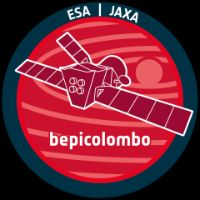

Mi az a BepiColombo?

A BepiColombo egy európai–japán űrmisszió, amely a Merkúr bolygót vizsgálja. A küldetést az ESA (Európai Űrügynökség) és a JAXA (Japán Űrügynökség) közösen indította.
Az űrszonda 2018-ban indult, és rendkívül hosszú utazás után érkezik meg a Merkúrhoz. Útja során többször elrepül a Föld és más bolygók mellett, hogy lendületet gyűjtsön.
A küldetés céljai
- A Merkúr felszínének részletes feltérképezése
- A bolygó mágneses terének vizsgálata
- A belső szerkezet megértése
- A Nap közelségének hatásai
A Merkúr különleges bolygó: nagyon közel van a Naphoz, ezért extrém hőmérsékletek uralkodnak. Ez komoly kihívást jelent az űreszközök számára!
Érdekességek
🔥 Extrém hőség
A Merkúr felszíne akár 430°C-ra is felmelegedhet.
🌑 Hideg éjszakák
Az árnyékos oldal akár -180°C is lehet.
🚀 Hosszú utazás
Az űrszondának több mint 7 évbe telik odaérni.
Források
- https://www.esa.int/Science_Exploration/Space_Science/BepiColomboESA – BepiColombo
- https://www.esa.int/Enabling_Support/Operations/BepiColombo_operationsESA – Műveleti információk
- https://www.dlr.de/en/research-and-transfer/projects-and-missions/bepicolomboDLR – Projektinformáció